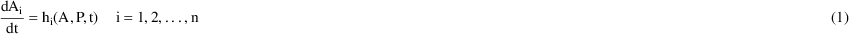
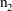

NONMEM Users Guide Part VI - PREDPP - Chapter VI
VI. Other User Subroutines
VI.A. INFN
VI.A.A. Global Input Variables
VI.A.B. Global Output Variables
VI.A.C. Miscellaneous Global Variables
VI.A.D. Displaying INFN-Defined Variables
VI.A.E. Other Subroutines That May Be Called
VI.B. MODEL
VI.B.A. Global Output Variables
VI.C. DES
VI.C.A. DES General Description
VI.C.B. Global Input Variables
VI.C.C. Global Output Variables
VI.C.D. Displaying DES-Defined Items
VI.D. TOL
VI.D.A. TOL (prior to NONMEM 7.4)
VI.D.B. TOL (NONMEM 7.4)
VI.E. AES
VI.E.A. AES General Description
VI.E.B. Global Input Variables
VI.E.C. Global Output Variables
VI.E.D. Displaying AES-Defined Items
NONMEM Users Guide Part VI - PREDPP - Chapter VI
VI. Other User Subroutines
VI.A. INFN
There is an INFN routine
supplied on the NONMEM distribution medium that must be
linked with the other routines for a NONMEM-PREDPP load
module; see section VII.A. It is a "dummy"
routine; it does nothing. It may be replaced by a
user-supplied INFN routine that allows the user to carry out
any of his own programmed computations at both the beginning
of a problem and again, at the ending of the problem. At the
beginning of the problem PREDPP calls INFN -- the
initialization call
and at the ending of the problem
PREDPP calls INFN -- the finalization call
At each call, the user has
read-write access to his data via use of the NONMEM utility
routine PASS described in Guide II. Thus data can be
transgenerated, and additional data items can be produced at
both the beginning and ending of a problem. Since the
finalization call actually occurs before the Table and
Scatterplot Steps, new data items generated by INFN at this
call can be tabled and scatterplotted.
The preface to INFN may be
SUBROUTINE INFN(ICALL,THETA,DATREC,INDXS,NEWIND)
USE SIZES, ONLY: DPSIZE,ISIZE
USE NMPRD_INT, ONLY: NWIND
INTEGER(KIND=ISIZE) :: ICALL,INDXS,NEWIND
REAL(KIND=DPSIZE) :: THETA
REAL(KIND=DPSIZE) :: DATREC
DIMENSION :: THETA(*),DATREC(*),INDXS(*)
USE NMPRD_INT, ONLY: PRED_IGNORE_DATA,PRED_IGNORE_DATA_TEST
The argument ICALL is 1 or 3,
according to whether the call to INFN is the initialization
or finalization call. A value ICALL=0 indicates that the
call is a special one occuring before the initialization
call of problem 1, allowing initialization to take place in
a multiple problem run. A value ICALL=-1 indicates that the
call is for the purpose of the PRED_IGNORE_DATA feature
(NONMEM 7.5).
The order of calls to INFN, PK,
and ERROR is:
Code for a generated INFN may be
specified by an $INFN block of abbreviated code. If there is
abbreviated code in the $PK and/or $ERROR blocks that tests
for ICALL=-1, ICALL=0, ICALL=1, or ICALL=3, this code is
moved by NM-TRAN to the INFN routine as if it had been coded
explicitly as part of an $INFN block. Such code is called
$PK-INFN and $ERROR-INFN code, respectively.
The arguments THETA and DATREC
function just as they do in any PRED routine when the
argument ICALL is 0, 1, or 3. In particular, when ICALL=1,
THETA is the array of initial estimates of
 for the problem, and when ICALL=3, THETA is the array of
final estimates of
for the problem, and when ICALL=3, THETA is the array of
final estimates of
 for the problem. When ICALL=0, THETA is the array of initial
estimates of
for the problem. When ICALL=0, THETA is the array of initial
estimates of
 for problem 1. When ICALL=1 or 3, the DATREC array initially
contains the first data record of the data set for the
problem, but using PASS, the contents of DATREC are replaced
by other data records of the data set for the problem. (When
ICALL=0, DATREC is initially the first data record of the
data set for problem 1, but using PASS, the contents of
DATREC are replaced by other data records for problem
1.)
for problem 1. When ICALL=1 or 3, the DATREC array initially
contains the first data record of the data set for the
problem, but using PASS, the contents of DATREC are replaced
by other data records of the data set for the problem. (When
ICALL=0, DATREC is initially the first data record of the
data set for problem 1, but using PASS, the contents of
DATREC are replaced by other data records for problem
1.)
Note that NM-TRAN generated code
for $INFN will contain
USE NMPRD_REAL,ONLY: PASSRC
and will use PASSRC rather than DATREC. They are the
same variable.
Note that subroutine argument
NEWIND should not be used. Variable NWIND in module
NMPRD_INT is used instead. NWIND is an integer variable
acting like the NEWIND variable described in Guide I. It
changes value during a pass through the data using PASS. It
assumes one of 3 values: 0 if the data record is the first
of the entire data set, 1 if the data record is the first
data record of an individual record (other than the first
individual record), and 2 if the data record is other than
the first data record of an individual record. (A
description of individual records with single-subject data
is given in chapter II.)
When NM-TRAN abbreviated code is
used for the $INFN block, the abbreviated code may use
variable name NEWIND. The generated code in FSUBS will have
variable name NWIND instead.
In Figure 37 the declarations
are somewhat different. The subroutine argument is named
NEWIN; the name NEWIND is assigned to NWIND. Thus, the
variable name NEWIND may be used in the Fortran code. This
is a matter of style. The declarations are:
SUBROUTINE INFN (ICALL,THETA,DATREC,INDXS,NEWIN)
USE NMPRD_INT, ONLY: NEWIND=>NWIND
INTEGER(KIND=ISIZE) :: NEWIN
See also NEWL2, below.
The user should not use PASS to
modify either the ID or MDV data items.
An initialization call can be
used for any sort of initialization. For example,
user-arrays in the routines PK and ERROR can be initialized
if these arrays are stored in module PRINFN (see below).
Also, interpolated values of a concomitant variable can be
computed for event records in which values are missing, e.g.
other-type event records that have been included so that
predictions can be obtained at the times in these records.
This could also be done in PK or ERROR, but then this would
be done with every call to these routines; if done in
INFN, the computation is done once only.
An example of a user-supplied
INFN routine is given in Figure 37. This INFN routine can be
used to obtain linearly interpolated values of an
independent variable V for those event records in which a
value is missing. Simple linear interpolation may not be
adequate for all data situations. With this INFN it is
assumed that there is one data record per event record. It
is also assumed that each individual record has no fewer
than 2 event records with measured values of V and that
every event record has a data item which the user might call
the missing independent variable data item (which assumes
values defined in the comment statements of the code). The
routine uses PASS to pass through the data twice: once, to
store all pairs of values for time and V from event records
with measured values of V, and again, to store the
interpolated values in records with missing values of V.
The INFN routine of Figure 37 is
also in the help Guide VIII as infn1.exa
"INFN_INTERPOLATION EXAMPLE 1". A version using
$INFN abbreviated code is also in the help Guide VIII as
infn2.exa "INFN_INTERPOLATION EXAMPLE 2".
The one-dimensional array,
INDXS, functions in the way described in Guide I, section
C.4.1. The user places integers into this array, using the
INDEX control record. These integers are then available to
PREDPP and therefore to INFN. For further details see
section III.C where the use of INDXS is illustrated with
subroutine PK.†
----------
† The INDXS array
cannot be used with NM-TRAN abbreviated code.
----------
The finalization call can use
the NONMEM utility routine GETETA to obtain conditional
estimates of the
 ’s (see section III.E.2). When used in conjunction
with PASS, the values returned for the
’s (see section III.E.2). When used in conjunction
with PASS, the values returned for the
 ’s with each call to GETETA are appropriate for the
individual whose data record is currently in DATREC.
’s with each call to GETETA are appropriate for the
individual whose data record is currently in DATREC.
When NM-TRAN abbreviated code is
use, the following code can be used to loop through all
records of the data set. The generated code will contain the
necessary code to call PASS and GETETA.
DOWHILE (DATA) ...
ENDDO
PRED_IGNORE_DATA feature (NONMEM
7.5)
This is an extension to $DATA
IGNORE=(list) filtering feature. The $DATA IGNORE=(list) and
ACCEPT=(list) provide a limited means of filtering the input
data set, which is performed by NMTRAN. To provide more
elaborate filtering for excluding data, PRED can cause
NONMEM to filter out additional data records at the
beginning of the run or problem. This is done by creating a
PRED_IGNORE_DATA_TEST==1 IF block presented in $INFN, $PK,
or $PRED. For eample:
$INFN
IF(PRED_IGNORE_DATA_TEST==1) THEN
PRED_IGNORE_DATA=0
IF(AGE>35.0) PRED_IGNORE_DATA=1
IF( ID>10.AND.ID<18.OR.ID>60.AND.ID<70 ) PRED_IGNORE_DATA=1
RETURN ;Assures no additional code in INFN is executed (saves time)
ENDIF
Or:
$PRED
IF(PRED_IGNORE_DATA_TEST==1) THEN
PRED_IGNORE_DATA=0
IF(AGE>35.0) PRED_IGNORE_DATA=1
IF( ID>10.AND.ID<18.OR.ID>60.AND.ID<70 ) PRED_IGNORE_DATA=1
RETURN ;Assures no additional code in PRED is executed (saves time)
ENDIF
If PRED_IGNORE_DATA is set to a
non-zero value, then the data record is ignored, and
excluded from the internal data set. This allows the user to
use more complex, multi-line and FORTRAN syntax based,
logical operations on data record exclusions.
When PRED_IGNORE_DATA_TEST=1,
then ICALL is set to -1. The following variables have
properly defined values during this call:
NEWIND,NEWL2,IPROB, NPROB,
S1NUM, S2NUM, S1NIT, S2NIT, S1IT, S2IT
So, it is possible to restrict PRED_IGNORE_DATA actions to a
particular problem number:
IF(IPROB==2.AND.PRED_IGNORE_DATA_TEST==1) THEN
PRED_IGNORE_DATA=0
IF(AGE>35.0) PRED_IGNORE_DATA=1
IF(ID>10.AND.ID<18.OR.ID>60.AND.ID<70 ) PRED_IGNORE_DATA=1
RETURN
ENDIF
No other variables are properly
defined during PRED_IGNORE_DATA_TEST=1, such as THETAS, data
record information such as NIREC, NDREC, etc., and no calls
to complicated functions that such as RANDOM() will be valid
(simple functions, such as built-in FORTRAN functions, are
fine). Furthermore, changes to data items may not be made
during this call. Any other functions of $INFN, such as data
modification, RANDOM() calls, etc., should be made with
separate ICALL==0 or ICALL==1 blocks. If the user write his
own INFN routine in which PRED_IGNORE_DATA code is
constructed, then NONMEM needs to be informed with the
PRED_IGNORE_DATA option in $DATA.
For example:
$PROB THEOPHYLLINE POPULATION DATA
$INPUT ID DOSE=AMT TIME CP=DV WT
$DATA THEOPP PRED_IGNORE_DATA
$SUBROUTINES ADVAN2 INFN=myinfn.f90
myinfn.f90:
SUBROUTINE INFN(ICALL,THETA,DATREC,INDXS,NEWIND)
USE SIZES, ONLY: DPSIZE,ISIZE
USE NMPRD_INT, ONLY: PRED_IGNORE_DATA,PRED_IGNORE_DATA_TEST
INTEGER(KIND=ISIZE) :: ICALL,INDXS,NEWIND
REAL(KIND=DPSIZE) :: THETA
REAL(KIND=DPSIZE) :: DATREC
DIMENSION :: THETA(*),DATREC(*),INDXS(*)
IF(PRED_IGNORE_DATA_TEST==1)THEN
IF (DATREC(3)>3) THEN
PRED_IGNORE_DATA=1
ENDIF
ENDIF
RETURN
END
If PRED_IGNORE_DATA_TEST and
PRED_IGNORE_DATA are used only in verbatim code, it is also
necessary to code the PRED_IGNORE_DATA option in $DATA.
VI.A.A. Global Input Variables
INFN can access variables other
than though its argument list. The following sections list
some of the variables of interest. The help Guide VIII can
be used to obtain the exact declarations and all variables
of interest.
|
USE NMPRD_INT , ONLY :
NWIND |
|
NWIND is an
integer variable acting like the NEWIND variable described
in Guide I. It is discussed above.
|
USE NMPRD_REAL , ONLY :
PASSRC |
|
PASSRC contains
the data record at ICALL values 0, 1 and 3. PASSRC changes
in conjunction with calls to PASS, at which time
transgeneration is permitted. Thus, PASSRC may be both an
input and an output variable. The DATREC argument of
subroutine INFN is in fact PASSRC from module NMPRD_REAL, so
either name may be used in a user-supplied INFN routine.
When NM-TRAN abbreviated code is used, neither PASSRC nor
DATREC may be referred to explicitly. Instead, use the name
of the input data item of interest.
|
USE NMPRD_INT , ONLY :
NEWL2 |
|
This is the
NEWL2 variable as described for ERROR.
NEWL2 = 1 if the data record is the first of an L2 record.
NEWL2 = 2 otherwise.
NEWL2 changes value in conjunction with calls to PASS.
|
USE NMPRD_REAL , ONLY :
ETA |
|
At ICALL==3,
these are the Posthoc (conditional) estimates of ETA. They
change value with calls to PASS and iterations of the
DOWHILE (DATA) loop, above.
|
USE ROCM_INT , ONLY :
IERE=>IEST_ERR , IERC=>ICOV_ERR |
The return
codes from the Estimation and Covariance Steps,
respectively.
|
USE ROCM_REAL , ONLY :
IIDX=>DIDVALX |
|
|
USE ROCM_REAL , ONLY :
CNTID=>OFV_IND |
|
IIDX gives
values of the ID data item. CNTID gives values of the
individual contribution to the objective function for the
corresponding values of IIDX. E.g., IIDX(n) is the ID data
item for the nth. individual record, and CNTID(n) is the
contribution to the objective function for the nth.
individual record. These values should only be displayed at
ICALL = 3 (finalization block).
|
USE ROCM_REAL , ONLY :
MIXP |
|
USE ROCM_INT , ONLY :
MIXNUM=>MIXCALL , MIXEST=>IMIXEST |
When ICALL=3
MIXEST is the index of the subpopulation estimated to be
that from which the individual’s data most probably
arises.
|
USE ROCM_REAL , ONLY :
OBJECT |
|
The final value
of the objective function.
The following variables may be
referenced as right-hand quantities in initialization and
finalization blocks. Note also that unsubscripted arrays may
appear in a WRITE statement.
|
USE ROCM_REAL , ONLY : OMEGAF
, SIGMAF |
|
OMEGAF(i,j) =
zero, initial, or final value of omega(i,j), according to
the current value of ICALL (0, 1, 3).
SIGMAF(i,j) = zero, initial, or final value of sigma(i,j),
according to the current value of ICALL (0, 1, 3).
Note that there
is no THETAF variable; the argument THETA of INFN has the
appropriate values of THETA. With NM-TRAN abbreviated code,
these variables are coded as OMEGA and SIGMA.
(See Parameter
Values: Initial and Final).
(See write print.)
The following
variables may be referenced as right-hand quantities in
finalization blocks (ICALL==3).
(Note also that unsubscripted arrays may appear in a WRITE
statement.)
|
USE NMPR_REAL, ONLY:
SETHET=>SETH, SEOMEG=>SEOM,
SESIGM=>SESIG, |
SETHETR=>SETHR
SETHET(i) = the
standard error of the estimate of internal theta(i).
SETHETR(i) = the standard error of the estimate of reported
theta(i)
(SETHET=SETHETR if $THETAR record not used).
SEOMEG(i,j) = the standard error of the estimate of
omega(i,j).
SESIGM(i,j) = the standard error of the estimate of
sigma(i,j).
|
USE NMPR_REAL, ONLY:
THSIMP=>THET_P, OMSIMP=>OMEG_P,
SGSIMP=>SIGM_P, |
THSIMPR
THSIMP(i) = the
"prior" for theta(i) in internal domain.
THSIMPR(i) = the "prior" for thetar(i) in reported
domain.
(THSIMP=THSIMPR If $THETAR record not used).
OMSIMP(i,j) = the "prior" for omega(i,j).
SGSIMP(i,j) = the "prior" for sigma(i,j).
Values of
THETA, OMEGA and SIGMA that are produced during a Simulation
Step using the user-supplied routine PRIOR.
The following group are NONMEM
"counter variables."
|
USE ROCM_INT , ONLY :
NIREC=>NINDREC , NDREC=>NDATINDR |
|
USE NMPRD_INT , ONLY :
NPROB, IPROB |
|
USE ROCM_INT , ONLY :
NREP , IREP=>NCREP |
|
USE ROCM_INT , ONLY :
LIREC=>NDATPASS |
|
USE ROCM_INT , ONLY : NINDR ,
INDR1 , INDR2 |
|
INTEGER(KIND=ISIZE), POINTER:
S1NUM, S2NUM, S1NIT, S2NIT,
S1IT, S2IT |
They may be
used on the right in $INFN or INFN. They change values when
PASS is called, if appropriate. Counters include (in the
order above): record counters; problem iteration counters;
super-problem iteration counters; simulation repetition
counters; number of data records in the individual record;
number of individual records in the data set containing an
observation record, and their indices. More information can
be found in Chapter III.
|
USE ROCM_REAL , ONLY :
PRED_, RES_, WRES_ |
|
These variables
are the values of the PRED, RES, WRES items displayed in
tables. They may be used on the right in $INFN or INFN when
ICALL=3. They change values when PASS is called. They may be
used in NM-TRAN abbreviated code. If the INFN routine is
user-coded, the variables are located in the APPND array.
The declarations are as follows:
USE ROCM_REAL, ONLY: APPND
PRED_=>APPND(001)
RES_=>APPND(002)
WRES_=>APPND(003)
In addition,
the following related variables may be used and are also
located in APPND:
IWRS_ IPRD_ IRS_
NPRED_ NRES_ NWRES_
NIWRES_ NIPRED_ NIRES_
CPRED_ CRES_ CWRES_
CIWRES_ CIPRED_ CIRES_
PREDI_ RESI_ WRESI_
IWRESI_ IPREDI_ IRESI_
CPREDI_ CRESI_ CWRESI_
CIWRESI_ CIPREDI_ CIRESI_
EIWRES_ EIPRED_ EIRES_
EPRED_,ERES_,EWRES_,NPDE_,NPD_,ECWRES_
OBJI_
See
INTRODUCTION TO NONMEM 7 and help Guide VIII for more
information on these variables. Note that OBJI_ is the value
of the individual contribution to the objective function and
can also be found in the appropriate positition of CNTID,
above.
|
REAL(KIND=DPSIZE) , POINTER : :
DEN_ , CDEN_( : ) |
|
USE ROCM_REAL , ONLY :
DEN_NP |
|
DEN_=>DEN_NP(1) |
|
CDEN_=>DEN_NP(2:) |
These values
are computed by NONMEM when the Nonparametric step is
performed and marginal cumulatives are requested. DEN_ is
the nonparametric density. CDEN_(n) is the marginal
cumulative value for the nth. eta. At ICALL==3, they change
value with calls to PASS and iterations of the DOWHILE
(DATA) loop, above.
|
USE NMPR_REAL , ONLY :
PR_Y |
|
|
USE NMPR_REAL , ONLY :
PR_CT |
|
See Chapter IV.
VI.A.B. Global Output Variables
|
USE NMPRD_REAL , ONLY :
PASSRC |
|
PASSRC is both
an input and an output variable. See above.
|
USE NMPR_INT , ONLY :
SKIP_=>SKIP |
|
SKIP_ controls
premature termination of a problem (with subproblems),
superproblem or superproblem iteration. May be set at
ICALL=3.
VI.A.C. Miscellaneous Global Variables
PRINFN is a global module for
INFN-defined variables. It is meant to be used for
communication with other other blocks of abbreviated code or
with user-written codes. The declaration is:
MODULE PRINFN USE SIZES, ONLY : DPSIZE,DIMTMP
REAL(KIND=DPSIZE), TARGET, DIMENSION (DIMTMP):: ITV
END MODULE PRINFN
where the size is given in
SIZES.f90 by PARAMETER (DIMTMP=500) and DIMTMP can be
changed with the $SIZES record. PREDPP is recompiled by
default with every NONMEM run, and so PRINFN is always sized
to the current value of DIMTMP.
Within a user-supplied code, the
declaration
|
USE PRINFN , ONLY :
TLCOM=>ITV |
|
makes it possible to use
elements of TLCOM, e.g., TLCOM(1), TLCOM(2).
When NM-TRAN is used, the
generated code is a little more complicated. For example,
suppose the $INFN block contains
$INFN
SUM=0
FSUBS will contain MODULE
INFNP which contains:
USE PRINFN, ONLY: ITV
REAL(KIND=DPSIZE), DIMENSION (:),POINTER ::TLCOM
REAL(KIND=DPSIZE), POINTER ::SUM
INFNP also contains a subroutine
ASSOCPRINFN containing statements such as
TLCOM=>ITV
SUM=>TLCOM(00001)
ASSOCPRINFN is called by INFN,
PK, ERROR and other subroutines in FSUBS. SUM can be used in
all these routines and the generated code will use the
user-supplied variable SUM.
Note that PRINFN is not
initialized or modified by NONMEM or PREDPP. Unlike module
NMPRD4, the variables in the module may be initialized or
modified by $INFN at ICALL values 0 or 1 or 3, and will
retain whatever values they are given.
VI.A.D. Displaying INFN-Defined Variables
When NM-TRAN abbreviated code is
used, variables that are defined first in $INFN or in
$PK-INFN or $ERROR-INFN blocks are listed in PRINFN. These
variables cannot be displayed in tables or scatterplots. If
they are to be displayed, WRITE statements can be used, or
their values can be assigned to variables that are listed in
module NMPRD4.
VI.A.E. Other Subroutines That May Be Called
The NONMEM utility routine SUPP
is used to suppress portions of the NONMEM output report.
SUPP may be called only when ICALL is 0, 1, or 3.
VI.B. MODEL
Some ADVAN routines,
specifically those implementing general linear or nonlinear
kinetic models, require an additional user-supplied routine
called MODEL which allows the user to conveniently specify
important aspects of the model. MODEL is called once only,
at the beginning of a NONMEM-PREDPP run. Its preface is
SUBROUTINE MODEL (IDNO,NCM,NPAR,IR,IATT,LINK)
USE PRMOD_CHAR, ONLY: NAME
USE SIZES, ONLY: ISIZE
INTEGER(KIND=ISIZE) :: IDNO,NCM,NPAR,IR,IATT,LINK
DIMENSION :: IATT(IR,*),LINK(IR,*)
The user may have several MODEL
routines and use different ones for different runs. The
routine used in a particular run can be identified from the
output. For this to happen, an integer identification value
should be assigned by MODEL to the variable IDNO. This value
will be printed on the first PREDPP problem summary page.
When NM-TRAN abbreviated code is used, IDNO is set to
9999.
The total number of compartments
to be used, excluding the output compartment, is specified
by assigning this number to NCM. This number cannot exceed
29, unless the $SIZES record is used to increase PC to a
larger value than 30. The largest possible value of PC is
999, in which case NCM may be 998.
Basic PK parameters exist for
general linear and nonlinear models as they do for more
specific models. A TRANS routine is used which translates
the set of basic PK parameters whose values are computed in
the PK routine to a set of parameters used internally by the
ADVAN routine. The maximum number of basic PK parameters to
be used in any TRANS routine (
; see section III.G) is specified by assigning this number
to the variable NPAR. NPAR may be 0, e.g., when only THETA
and data record items are used in differential equations.
The maximum number of basic PK parameters plus the number of
additional parameters whose row indices are given explicitly
in PK (at ICALL=1) cannot exceed PG, a constant in SIZES.f90
which is given by PARAMETER (PG=50+PCT), where PCT is the
maximum number of model event time parameters given by
PARAMETER (PCT=30) Both these parameters can be changed with
the $SIZES record.
Values of compartment attributes
must be given for each compartment (other than the output
compartment, for which these values are fixed by PREDPP; see
below). There are 5 required attributes; one should choose a
value for each of these attributes for each compartment. To
choose these values for the Ith compartment first answer
these 5 defining questions:
Values of attributes are given
by assigning values to IATT. IATT is a two-dimensional array
of 4 byte integers. If the answer to the Jth question for
compartment I is ’yes’, then set IATT(I,J)=1; if
the answer is ’no’, then set IATT(I,J)=0.
There is really no reason for
answering ’no’ to question 3 for compartment I
other than to activate a check for dose and reset-dose event
records with CMT data item equal to I. Similarly, the only
reason for answering ’no’ to question 2 for
compartment I is to activate a check for other and reset
event records with CMT data item equal to -I. If the Ith
compartment is an equilibrium compartment (see below), then
the answer to question 3 must be ’no’; one
cannot put a dose into an equilibrium compartment.
An output-type
compartment is one that has initial status off; no doses
allowed; may be turned on and off (questions 1-5 are
’off’, ’yes’, ’no’,
’no’, ’no’).† It must be
turned on with an other-type event record in order to start
accumulating drug. There may be more than one such
compartment, in addition to the default output compartment.
For such compartments, the value of CMT may be negative on
observation records to obtain an observation and turn the
compartment off.
----------
† When
NM-TRAN’s $MODEL record is used, a clause such as
COMP=NAME
defines a compartment with name "NAME" and with
attributes initial on, off/on allowed, dose allowed. In
order to make this an output-type compartment, the
attributes should be
COMP=(NAME,NODOSE,INITIALOFF)
----------
Labels for the various
compartments should also be given. Labels are displayed in
the PREDPP problem summary; see the Compartment Attributes
Table, under column heading FUNCTION (the label
’OUTPUT’ is supplied by PREDPP). For example,
see Figure 28. A label consists of 8 characters, including
blanks. (With NONMEM 7.4, the maximum number of characters
is given by SD in SIZES. The default is 30. If any label
exceeds 8 characters, a wider table is generated.) The
compartment name is given in a character array, NAME, listed
in a PREDPP module. The appropriate declarations are:
|
USE PRMOD_CHAR , ONLY : NAME |
|
The label
for compartment I is stored in NAME(I), e.g.
NAME(2)=’CENTRAL’
The attributes for the output
compartment are fixed by PREDPP: initial status off; no
doses allowed; may be turned on and off; is neither the
default observation nor default dose compartment.
Figure 38 is an example of a
MODEL routine that can be used to describe the one
compartment linear model with first order absorption, just
as this model is described in section VII.C.2. Figure 39 is
an example of a MODEL routine that can be used to describe
the three compartment linear model used with the Example IV
developed in sections III.L.4, IV.G.4, and V.L.4. Both of
these routines illustrate the use of the LINK argument which
is discussed below. (An NM-TRAN $MODEL record corresponding
to the MODEL routine of Figure 39 is as follows:
$MODEL COMP=(DEPOT,NOOFF,DEFDOSE) COMP=(CENTRAL NOOFF NODOSE) COMP=(EFFECT, NOOFF NODOSE DEFOBS)
It could be used in place of the
$MODEL record of Figure 30. The information in the MODEL
routine which is not explicitly specified in the $MODEL
record is obtained from the $PK record.)
Most pharmacokinetic models
involve only nonequilibrium compartments, compartments such
that the amounts of drug in them can be given by a solution
to a system of differential equations. However, some ADVAN
routines - ADVAN9, ADVAN15, ADVAN17 - allow a model (a
general nonlinear model) to be comprised of both
nonequilibrium and equilibrium compartments. Equilibrium
compartments are, roughly speaking, compartments such that
at any time the amounts of drug in them can be given by a
solution to a system of algebraic equations. These ADVAN
routines allow the user to define a model consisting only of
equilibrium compartments, in which case the ADVAN becomes a
purely algebraic equation solver. The quantities A(i) may be
thought of as unknowns to be determined rather than as
"compartment" amounts. Records with EVID=1 and
EVID=4 (dose, reset and dose) may not be present in the data
set because doses cannot be placed in equilibrium
compartments. Similarly, data items related to doses (RATE,
AMT, SS, II, ADDL) may or may not be used in the data set.
If used, they must contain null values. The TIME data item
is optional. If TIME is used, ADVAN is called exactly as
other ADVAN routines are called: when the value of TIME
increases. If TIME is not defined, AES routine specifies the
calling protocol for ADVAN: call with every event record
(the default) or once per individual record (see section
E.C). If calls to ADVAN are limited, the CALL data item may
be defined in the data set and given the value 10 to force
additional calls to ADVAN (see chapter V, section J).
There are two additional
attributes to which values must be given only when these
ADVAN routins are used. The first of these simply identifies
the compartment as an equilibrium compartment or not. The
second of these relates to the output compartment. The
amount of drug in the output compartment at time t is given
by A+B-C, where A is the total amount in the system at s,
the time the compartment is turned on, B is the total amount
of drug input to the system between times s and t, and C is
the total amount in the system at time t. If an equilibrium
compartment represents a subcompartment, i.e. the amount D
of drug in the compartment is part of the amount of drug in
another compartment, D should be excluded from A and C. The
attribute in question is concerned with whether D should or
should not be excluded from A and C. To choose values for
the two attributes for the Ith compartment first answer:
If the answer to the Jth
question (J=8,9) for compartment I is ’yes’,
then set IATT(I,J)=1; if the answer is ’no’,
then set IATT(I,J)=0.
The internal parameters of a
general linear model are the rate constants. The user
assigns each rate constant a number, any number between 1
and the value assigned to NPAR. The numbering is established
using the LINK array.
LINK is a two-dimensional
integer array. If no drug can distribute from the Ith
compartment to the Jth compartment, then one can assign 0 to
LINK(I,J), or not bother assigning any value to LINK(I,J).
In particular, LINK(I,I) should always be ignored. If drug
can distribute from the Ith compartment to the Jth
compartment, then one assigns to LINK(I,J) the number of the
rate constant quantifying this (first-order) distribution.
The LINK array should, in particular, account for the
distribution of drug from compartment I to the output
compartment. That is, if such distribution can take place,
then a number should be assigned to LINK(I,NCM+1). The
numbers of the rate constants need not start with the number
1, and they need not be consecutive, i.e. numbers may be
skipped. Moreover, two rate constants can be assigned the
same number; this forces their values and
 -derivatives to be the same.
-derivatives to be the same.
With NM-TRAN, there are two ways
to specify LINK. When the $PK abbreviated code is used, link
relationships are implied by variable names such as Kij or
KiTj (where "T" stands for "TO"). When a
user-supplied PK is used, the LINK relationships must be
specified explicitly on the $MODEL record using options such
as Kij.
With a general nonlinear model
the user explicitly specifies a set of differential
equations (see section C). These equations are parameterized
in terms a set of internal kinetic parameters. The LINK
array plays no role with a general nonlinear model. The
internal parameters are numbered between 1 and the number
assigned to NPAR. The rules concerning internal parameter
numbering are the same as given above for rate constant
numbering.
VI.B.A. Global Output Variables
|
USE PRMOD_CHAR ONLY :
NAME |
|
This is discussed above.
|
USE PRMOD_INT , ONLY :
ISSMOD |
|
Used for the
Initial Steady State feature of PREDPP, with the general
non-linear models (ADVAN6, ADVAN8, ADVAN9, ADVAN13, ADVAN14,
ADVAN15, ADVAN16, ADVAN17, ADVAN18). By default, the initial
conditions (i.e., compartment amounts) are zero at the start
of each individual record and after a reset record.
Different initial conditions may be computed. This is done
by setting ISSMOD (in a user-written MODEL routine) or using
the I_SS option of the $MODEL record. The I_SS option causes
the ISSMOD global variable to be set to the given value in
SUBROUTINE MODEL. Values of ISSMOD are the same as I_SS in
$PK (See Chapter III Section I.B).
VI.C. DES
VI.C.A. DES General Description
This user-supplied subroutine is
required by a general nonlinear model. (With ADVAN9,
ADVAN15, and ADVAN17, a $DES block may not appear when there
are only equilibrium compartments.) Also, regardless of the
model chosen, it is also required whenever the user chooses
to compute steady-state kinetics using the SS6 routine; see
section VII.B. Usually, though, SS6 is only used when
steady-state kinetics are computed with a general nonlinear
model, so that DES would be required in any event. (When the
model is not a general nonlinear model and SS6 is used, then
unless steady-state infusions are present in the data set,
the only executable statement in DES need be: RETURN.)
DES allows the user to
conveniently specify the system of ordinary differential
equations describing the underlying kinetics (of the
nonequilibrium compartments; see section B). Its preface
is†
SUBROUTINE DES (A,P,T,DADT,IR,DA,DP,DT)
USE SIZES, ONLY: DPSIZE,ISIZE
IMPLICIT REAL(KIND=DPSIZE) (A-Z)
INTEGER(KIND=ISIZE) :: IR
DIMENSION :: A(*),P(*),DADT(*),DA(IR,*),DP(IR,*),DT(*)
----------
† Note that with earlier versions of the guide there was no argument DT.
This limited the way time T could be used in the model.
If a rate parameter, duration parameter, or absorption lag time
parameter was a random variable, then T could only be used only in
logical conditions in DES. This restriction was lifted with NONMEM V.
Argument DT is required and time T may be used freely in DES routines
and in $DES abbreviated code.
----------
The system of differential
equations can be expressed mathematically by

where A is the vector of drug
amounts in all the various compartments (other than
the output compartment), P is the vector of internal PK
parameters (see section B.) , t is time, and n is the number
of compartments (excluding the output compartment and all
equilibrium compartments; see section B). The parameter
is defined to be the kth internal parameter. It is a
continuously acting parameter. An example of such a system
is this.


i.e. the familiar one
compartment model with linear elimination and absorption
from a drug depot. In general the system need not be linear,
or even homogeneous (i.e. the h functions can depend on
t).
The arguments A, P, and T of DES
are inputs to the routine and correspond to A, P, and t in
(1). The GG array computed by the PK routine is passed to
DES as P.‡
----------
‡ When NM-TRAN is
used, the basic PK parameters are assigned the first
positions in GG. Explicit Basic PK parameters are P(n) (nth
basic PK parameter) Implicit basic PK parameters are
PK-defined variables used also in $DES block (and AES block,
if present). A user-written PK routine should also assign
the first positions in GG to the P(i) that will be used by
the DES routine (and AES routine, if any). The DES routine
should not use positions in GG beyond the basic PK
parameters. I.e., it should not use the additional PK
parameters such as Fi (biavailability franctions), because
they are used by PREDPP.
----------
T is a
"continuously-valued" variable, not the
discretely-valued TIME data item.
The primary task of DES is to
compute the values of the h functions and store these values
in DADT. The value of
is stored in DADT(I).
In addition to computing the
values of the
, DES must also compute the values
where m is the number of all
compartments, including equilibrium compartments
should they exist (see section B). With population data DES
must also compute the values
and
The value of
is stored in DA(I,J), the value of
is stored in DP(I,K), and the value of
is stored in DT(I).
In the above example:
A routine for implementing the
example is given in Figure 40. The numbering of the
compartments is that specified by the MODEL routine given in
Figure 38. Since the LINK array plays no role with a general
nonlinear model, the numbers set in the LINK array are
ignored. Note that it is unnecessary to set 0’s in
either DA or DP or DT.
We emphasize that it is only
necessary for the computations in DES to characterize the
underlying kinetics. These computations are not to be
concerned with matters of boundary conditions or drug input
functions described on dose event records. Those matters are
handled by PREDPP itself. However, the differential
equations may include terms for endogenous drug production,
and initial conditions A_0 may be specified in the PK
routine (See chapter I, section I.B).
ADVAN routines such as ADVAN6
use a subroutine from third party sources to do the
integration. For example, ADVAN6 calls DVERK from IMSL,
ADVAN13 calls LSODA, etc. These subroutines are the ones
that call DES. They call DES with various values of T during
the integration (i.e., the advance in time) from T1 to T2.
T1 and T2 are beginning and ending event time. Typically,
these are the times on a pair of event records, but the end
time of an integration interval may also be a non-event time
(i.e., the time of a lagged or additional dose), or a model
event time (i.e., MTIME(i) for some i. T2 may also be a time
associated with the termination of a zero-order bolus dose.
The integrating subroutine may decide it has enough
information after a call with a value of T that is not
exactly T2.(It might be a little less or a little more.)
This behavior may be controlled by the user; see ITASK_ and
STOP_TIME (below)
After the advance, DES is called by the ADVAN routine itself
(i.e., $DES statements are evaluated) at the exact value of
the event time. See ISFINL (below).
For a given integration
interval, the values of DADT(I) must be continuous. Fortran
functions that are continuous, such as SIN and COS, may be
used. The INT, MOD, and ABS functions (or other functions
that introduce a discontinuity) should not be used in DES,
especially if the end time of the interval happens to
coincide with a change in DADT. Instead, use model event
times MTIME in PK, and either set flag variables in PK that
can be tested in DES, or use MPAST in DES.
Appendix III describes MTIME parameters in detail, and gives
an example of the use of MPAST in DES for modelling EHC
(Enterohepatic Recycling). It also describes where other
important examples of modelling step functions and circadian
rhythm may be found.
Appendix IV describes how the
chain rule is used to obtain
.
The summation includes terms
. But if some P is defined only in terms of THETA and
EVTREC, then
is always zero. By using THETA and EVTREC directly in DES
and $DES, as described below, there is less time spent
calculating terms that always zero, and this may improve run
times.
The reader should see section
III.K for a discussion about PRED-error recovery from
PREDPP. DES can force an immediate return to NONMEM from
PREDPP with a nonzero PRED error return code and
accompanying user message. The required declarations are
described in section III.K.2.
VI.C.B. Global Input Variables
|
USE PRMOD_INT , ONLY :
ICALL=>ICALLD |
|
ICALL has the
same value as PK and ERROR’s ICALL argument. At
ICALL=1, DES may optionally store values in IDEFD (see
below) in order to improve run time. Values may be stored in
DADT, etc., as at other calls, but these values are ignored.
At ICALL=1 a user-written DES routine that does not check
ICALL will compute DADT, etc., using values that PK computed
(at ICALL=1) with the first event record and compartment
amounts that are 0. There is some risk of arithmetic
difficulties if, for example, a compartment amount of 0 is
raised to a power. If this occurs, the user should insert
the following statement at the top of the routine (or $DES
block):
IF (ICALL.EQ.1) RETURN
ICALL blocks
testing for ICALL values 4 (simulation) and 5 (data
averages) are permitted.
|
USE PROCM_INT , ONLY :
ISFINL |
|
A copying pass
occurs when the $TABLE record is present, and specified
PRED-defined items listed in NMPRD4. When NONMEM is
performing simulation or a copying pass (COMACT>0), DES
is called immediately after the advance to an event time or
non-event time, with a value of T equal to this time, so
that DES-defined variables listed in NMPRD4 are displayed
with their final values for that advance. Global variable
ISFINL is set by PREDPP to 1 on this final call to DES.
ISFINL can be tested on a WRITE statement if such statements
are used in DES. ISFINL is not set to 1 immediately
after the advance to a model event time.
|
USE PROCM_REAL , ONLY :
DOSTIM , DOSREC |
|
DOSTIM and
DOSREC are described in Chapter III, Section I.A. A DES
routine may test DOSTIM and elements of DOSREC in a logical
condition. It may use them on the right-hand side of an
assignment statement. If DOSTIM is a random variable, DOSTIM
must not be used in DES or $DES. However, DOSTIM may always
be used in a $PK block or PK routine to define a random
variable which may be used in the DES routine. With NM-TRAN,
the $BIND record may be used, but it only affects the DOSREC
for additional and lagged doses (See chapt III).
|
USE PROCM_REAL , ONLY :
EVTREC |
|
Data record
items may be used explicitly in DES and $DES abbbreviated
code (rather than obtained as PK parameters). EVTREC is the
current event record (the event record to which the system
is being advanced). This may improve run time.
|
USE PROCM_REAL , ONLY :
THETA |
|
Elements of
THETA may be used explicitly in DES and $DES abbreviated
code (rather than obtained as PK parameters). This may
improve run time.
|
USE ROCM_INT , ONLY : MIXEST
, MIXNUM , MIXP |
Mixture-model
variables may be used in DES. For a description, see INFN,
above.
VI.C.C. Global Output Variables
|
USE PRMOD_INT , ONLY :
IDEFD |
|
At ICALL=1, DES
may optionally store values in IDEFD in order to improve run
time.
IDEFD(1) may
optionally be set by DES to indicate how many thetas it
uses. Set to 0 if none. Otherwise, set to the index of the
highest numbered theta used. PREDPP determines from the
value stored in IDEFD(1) how many elements of theta to copy
from its input argument THETA to THETA in PROCM_REAL. When
IDEFD(1) is set by DES to -9, PREDPP copies all thetas in
the problem to THETAS. IDEFD(1) defaults to -9, which does
no harm, but may cause the run to be slower than
necessary.
IDEFD(2) is the
full/compact flag for DES. DES sets this to describe the
format of DA and DP and DT on subsequent calls to DES.
IDEFD(2)=0 DES will return compact arrays.
IDEFD(2)=1 DES will return full arrays.
Section C above describes DA, DP and DT with full arrays.
Appendix IV describes compact arrays. It also describes the
implementation of 2nd. partial derivatives for the Laplacian
method. Compact arrays are required with the Laplacian
method; they are optional otherwise. With a large system,
run times may be improved when compact arrays are used.
With NM-TRAN,
DES=FULL or DES=COMPACT can be specified as an option of the
$ABBREVIATED record. Compact arrays are the default except
for ADVAN9, ADVAN15 and ADVAN17. With ADVAN9, ADVAN15 and
ADVAN17, full arrays are required, and the $ESTIMATION
record option NUMERIC is required with the Laplacian
method.†
----------
†
With versions of NONMEM 7 prior to 7.4, this was true of
ADVAN13 as well.
----------
|
USE PRLS01_REAL, ONLY:
STOP_TIME |
|
|
USE PRLS01_INT, ONLY:
ITASK_=>ITASK |
|
With NONMEM
7.5, these reserved variables are used to avoid overshoot in
ADVAN9, ADVAN13, ADVAN14, and ADVAN15. These LSODA based
routines use an algorithm for integration that overshoots
the integration interval during calls to DES, but still
accurately evaluates at the end of the integration interval
when all calculations are completed. However, you may wish
to capture a maximal or minimal value during $DES, and the
overshoot should be turned off for this purpose. This is
readily done by setting ITASK_=4 in $PK:
$PK
ITASK_=4
You may also
specify a STOP_TIME (Tcrit) past which it should not
integrate, if it is different from the end of the normal
integration interval:
IF(TIME==4.0)
STOP_TIME=5.0
To set back to
default (end of normal integration interval),
STOP_TIME=-1.0d+300
VI.C.D. Displaying DES-Defined Items
A value stored in a variable (or
array element) V in DES may be displayed in a table or
scatterplot. To accomplish this, module NMPRD4 must be
defined in DES, and V must be listed in NMPRD4. The values
of DES-defined variables displayed for the first event
record of the data set are 0’s. The values displayed
for the first event record of subsequent individuals are
those from the last event record of the previous individual.
This is because there is no call to DES with the first event
record of the individual record. If the first event record
is followed by records with the same value of TIME, there is
also no call to DES and the displayed values are the same as
for the first record. NM-TRAN has a warning about such
values.
WARNING 48) DES-DEFINED ITEMS ARE COMPUTED ONLY WHEN EVENT TIME
INCREASES. E.G., DISPLAYED VALUES ASSOCIATED WITH THE FIRST EVENT RECORD
OF AN INDIVIDUAL RECORD ARE COMPUTED WITH (THE LAST ADVANCE TO) AN EVENT
TIME OF THE PRIOR INDIVIDUAL RECORD.
DES is called immediately after
the advance to an event time or non-event time, with a value
of T equal to this time, so that DES-defined variables
listed in NMPRD4 are displayed with their final values for
that advance. See also ISFINL (above).
Module NMPRD4 also provides a
convenient place to store values of variables to be shared
between DES and other user routines, and it is used thusly
when these routines are generated from NM-TRAN abbreviated
code (see Guide IV). (INFN-defined and declared variables
are also shared between user routines.)
VI.D. TOL
This user-supplied subroutine is
required when using an ADVAN or SS routine that uses
numerical techniques. These are the general nonlinear models
(ADVAN6, 8, 9, 13, and, with NONMEM 7.4, 14, 15, and with
NONMEM 7.5, 16, 17, 18), the one compartment model with
Michaelis-Menten elimination (ADVAN10), and two particular
steady-state routines (SS6,9); see section VII.C. The TOL
subroutine changed significantly with NONMEM 7.4. The two
versions are described separately.
VI.D.A. TOL (prior to NONMEM 7.4)
With earlier versions, TOL is
called only once at the start of a run. TOL’s preface
is
SUBROUTINE TOL(NRD)
DIMENSION :: NRD(*)
USE SIZES, ONLY: ISIZE
INTEGER(KIND=ISIZE) :: NRD
The purpose of TOL is to set
NRD(I) to the number of accurate digits that are required in
the computation of the drug amount in compartment I, i.e.
the relative tolerance
ADVAN9, 13, 16, 17, and 18 have the capability of using
different values of NRD for different compartments. However,
all the other ADVAN and SS routines requiring TOL take the
relative tolerance to be the same for all compartments;
NRD(I),
 , is ignored, and only NRD(1) is used. Even with ADVAN9, 13,
16, 17, 18 the accuracy of a steady-state amount
(computed by SS9) for compartment
,
, is only controlled to be NRD(1) digits. The user will
usually be content with a single relative tolerance which
applies to all compartments. In this case, as a rule of
thumb, one should begin by setting NRD(1) to n+1 or n+2,
where n is the number of significant digits required in the
parameter estimates, or with double precision, perhaps to
n+2 or n+3. If one succeeds with this setting, one might try
increasing NRD slightly.
, is ignored, and only NRD(1) is used. Even with ADVAN9, 13,
16, 17, 18 the accuracy of a steady-state amount
(computed by SS9) for compartment
,
, is only controlled to be NRD(1) digits. The user will
usually be content with a single relative tolerance which
applies to all compartments. In this case, as a rule of
thumb, one should begin by setting NRD(1) to n+1 or n+2,
where n is the number of significant digits required in the
parameter estimates, or with double precision, perhaps to
n+2 or n+3. If one succeeds with this setting, one might try
increasing NRD slightly.
Indeed, NRD can be a scalar,
rather than an array appearing in a DIMENSION statement, in
which case NRD is simply assigned a unique relative
tolerance. Even with ADVAN9, 13, 16, 17, 18 this is
true.
An example of a TOL routine for
use with NONMEM 7.3 and earlier versions is given in Figure
41.
When NM-TRAN is used, TOL=n may
be specified as an option on the $SUBROUTINES record.
Subroutine TOL is generated by NM-TRAN. It will contain the
statement
NRD(1)=n.
It is also possible to use the
$TOL record, e.g.
$TOL NRD=10
When $TOL is used for ADVAN9, 13, 16, 17, 18 different
values of NRD may be specified for each compartment,
e.g.,
$TOL
NRD(1)=5
NRD(2)=10
TOL values may also be specified
in the NONMEM control stream. With NM-TRAN, this may be done
using the $ESTIMATION and $COVARIANCE records. The
$COVARIANCE record has an option TOL=n. This can be used to
set a different value of TOL for the Covariance Step. With
ADVAN9, ADVAN13, ADVAN14, ADVAN15, ADVAN16, ADVAN17, and
ADVAN18, the $ESTIMATION and $COVARIANCE record options
ATOL=n may also be used. These can be used to set Absolute
tolerance for the Estimation and Covariance Steps. The
default is 12 (that is, accuracy is 10**(-12)).
VI.D.B. TOL (NONMEM 7.4)
With NONMEM 7.4, there are
multiple calls to TOL during the run, for each NONMEM step.
TOL’s preface is
SUBROUTINE TOL(NRD,ANRD,NRDC,ANRDC)
USE SIZES, ONLY: ISIZE
INTEGER(KIND=ISIZE) :: NRD(0:*), ANRD(0:*), NRDC(0:*), ANRDC(0:*)
An example of a TOL routine for
use with NONMEM 7.4 is given in Figure 41a.
Optional declarations with
NONMEM 7.4:
USE NMPRD_INT, ONLY: IPROB
USE NM_BAYES_INT, ONLY: NM_STEP,BASE_STEP,EST_STEP,COV_STEP, & TABLE_STEP,SIML_STEP,INE_STEP, NONP_STEP
The purpose of TOL is to set the
following variables. Any value that may be set in subroutine
TOL may also be set using the NM-TRAN $TOL record.
The number of digits that are
required to be accurate in the computation of the drug
amount in compartment I, i.e., the relative tolerance. ADVAN
9, 13, 16, 17 and 18 have the capability of using different
values of NRD for different compartments. For compartments
not specified, the tolerance of the last compartment
specified will be used.
However, all
the other ADVAN routines requiring TOL take the relative
tolerance to be the same for all compartments; NRD(I),
 , is ignored, and only NRD(1) is used. NRD(0) is the
relative tolerance for the Steady State computations. If
NRD(0) is not specified, NRD(1) is used.
, is ignored, and only NRD(1) is used. NRD(0) is the
relative tolerance for the Steady State computations. If
NRD(0) is not specified, NRD(1) is used.
The value of
NRD(1) can also be specified using $SUBROUTINES option TOL.
The value of NRD(0) can also be specified using $SUBROUTINES
option SSTOL.
The absolute tolerance in the
computation of the drug amount in compartment I. The default
is 12 (that is, accuracy is 10**(-12)). Used by ADVAN 9, 13,
14, 15, 16, 17, and 18 which have the capability of using
different values of ANRD for different compartments. For
compartments not specified, the absolute tolerance of the
last compartment specified will be used.
ANRD(0) is the
absolute tolerance for the Steady State computations. If
ANRD(0) is not specified, ANRD(1) is used.
The value of
ANRD(1) can also be specified using $SUBROUTINES option
ATOL.
The value of ANRD(0) can also be specified using
$SUBROUTINES option SSATOL.
Same as NRD(I), but used for
the FOCE/LAPLACE covariance step. Used with ADVAN 9, 13, 16,
17, and 18. If not set, NRDC defaults to the value of NRD.
NRDC(0) is used for Steady State computations during the
FOCE/LAPLACE covariance step.
The value of
NRDC(1) can also be specified using $SUBROUTINES option
TOLC.
The value of NRDC(0) can also be specified using
$SUBROUTINES option SSTOLC.
Same as ANRD(I), but used for
the FOCE/LAPLACE covariance step. Used with ADVAN 9, 13, 14,
15, 16, 17, and 18. If not set, ANRDC defaults to the value
of ANRD. ANRDC(0) is used for Steady State computations
during the FOCE/LAPLACE covariance step.
The value of
ANRDC(1) can also be specified using $SUBROUTINES option
ATOLC.
The value of ANRDC(0) can also be specified using
$SUBROUTINES option SSATOLC.
A TOL routine may assign values
of NRD and ANRD specifically for the initial (base) setting
and each NONMEM step (estimation, covariance, simulation,
table/scatter step, simulation, initial parameters estimate,
nonparametric). For example, create a toluser.f90 file,
SUBROUTINE TOL(NRD,ANRD,NRDC,ANRDC)
USE NMPRD_INT, ONLY: IPROB
USE NM_BAYES_INT, ONLY: NM_STEP,BASE_STEP,EST_STEP,COV_STEP, & TABLE_STEP,SIML_STEP,INE_STEP, NONP_STEP
IMPLICIT NONE INTEGER ::
NRD(0:*), ANRD(0:*), NRDC(0:*), ANRDC(0:*)
IF(NM_STEP==EST_STEP) THEN NRD(1)=6 ANRD(1)=10 ELSE IF
(NM_STEP==COV_STEP) THEN NRD(1)=7 ANRD(1)=8 ELSE IF
(NM_STEP==TABLE_STEP) THEN NRD(1)=8 ANRD(1)=7 ELSE NRD(1)=9
ANRD(1)=12 ENDIF IF(IPROB>1) THEN NRD(1)=NRD(1)+1
ANRD(1)=ANRD(1)+1 ENDIF RETURN END
and incorporate using $SUBR,
e.g.,
$SUBROUTINES ADVAN13 TRANS1 TOL=toluser.f90
VI.E. AES
VI.E.A. AES General Description
This user-supplied subroutine is
required by a general nonlinear model with equilibrium
compartments (i.e. ADVAN9 and ADVAN15 and ADVAN17). AES
allows the user to conveniently specify the system of
algebraic equations describing the underlying kinetics of
the equilibrium compartments. Its preface is
SUBROUTINE AES (INIT,A,P,T,E,IR,DA,DP,DT)
USE SIZES, ONLY: DPSIZE,ISIZE
IMPLICIT REAL(KIND=DPSIZE) (A-Z)
DIMENSION :: A(*),P(*),E(*),DA(IR,*),DP(IR,*),DT(*)
The system of algebraic
equations is actually part of a coupled system of
differential and algebraic equations describing the
underlying kinetics of all the compartments, equilibrium and
nonequilibrium compartments. This coupled system can be
expressed mathematically by

where A is the vector of drug
amounts in all the various compartments (other than
the output compartment), P is the vector of internal PK
parameters, t is time,
is the number of nonequilibrium compartments (excluding the
output compartment), and

is the number of equilibrium compartments. The parameter
 is defined to be the kth internal parameter. It is a
continuously acting parameter. A very simple example is
this.
is defined to be the kth internal parameter. It is a
continuously acting parameter. A very simple example is
this.

i.e. the familiar one
compartment model with linear elimination and absorption
from a drug depot, but where a third compartment is in
equilibrium with the central compartment. The parameter R is
a ratio of drug amounts, not a rate parameter. In general
the system need not be linear, or even homogeneous (i.e. the
h and g functions can depend on t).
The arguments A, P, and T of AES
are inputs to the routine and correspond to A, P, and t in
(2) and (3). The GG array computed by the PK routine is
passed to AES as P. As with DES, some calls to AES
(including the final call during integration) may have a
value of T that is larger than the end time of the
integration interval.
See INTRODUCTION TO NONMEM 7, "ITASK_ and STOP_TIME:
Avoiding overshoot
The primary task of AES is to
compute the values of the g functions and store these values
in E. The value of
is stored in E(
+I). (When $AES abbreviated code is used, the index i for
algebraic expressions E(i) is optional; it is be supplied by
NM-TRAN if omitted.) The values of the h functions are
computed and stored by the DES subroutine (see section
C).
In addition to computing the
values of the
, AES must also compute the values
With population data AES must
also compute the values
The value of
is stored in DA(
 +I,J), the value of
is stored in DP(
+I,K), and the value of
is stored in DT(
+I,J), the value of
is stored in DP(
+I,K), and the value of
is stored in DT(
 +I).
+I).
When INIT=0, this signals a
regular call to AES in which the values of the g functions
must be stored in E and the partial derivatives just
enumerated must be stored in DA, DP, and DT. Such a call
occurs with many different values of time over an
integration interval, although the g functions usually do
not depend on time. When INIT=1, this signals an
initial-condition call to AES. When $AES abbreviated
code is used, the code for the call with INIT=1 is placed in
the $AESINIT block of abbreviated code. Such a call occurs
only with that value of time,
 , coinciding with the beginning of an integration interval,
and at such a call values that hold for A at
, coinciding with the beginning of an integration interval,
and at such a call values that hold for A at
 , for the equilibrium compartments, must be stored in A. (No
partial derivatives need be stored.) These values are used
as initial conditions for the integration. Usually, these
values have already been obtained by the ADVAN, and an
initial-condition call is unnecessary and does not occur.
However, when, for example,
, for the equilibrium compartments, must be stored in A. (No
partial derivatives need be stored.) These values are used
as initial conditions for the integration. Usually, these
values have already been obtained by the ADVAN, and an
initial-condition call is unnecessary and does not occur.
However, when, for example,
 is a time at which a bolus dose is given (such a dose must
go into a nonequilibrium compartment), then an
initial-condition call is necessary. At an initial-condition
call, the values for A at
, for the nonequilibrium compartments, are available. Values
for P are also available. (Let
is a time at which a bolus dose is given (such a dose must
go into a nonequilibrium compartment), then an
initial-condition call is necessary. At an initial-condition
call, the values for A at
, for the nonequilibrium compartments, are available. Values
for P are also available. (Let
 be the end of the integration interval. Both
be the end of the integration interval. Both
 and
and
 are state times; see section III.B.2. The values for P are
computed from the information in the argument record
associated with
are state times; see section III.B.2. The values for P are
computed from the information in the argument record
associated with
 , and, if
, and, if
 is a nonevent dose time, also from the information in the
record describing the dose.) Therefore, in principle the
system of algebraic equations given by (3) can be solved for
the amounts in the equilibrium compartments at
, although, obtaining an explicit solution may not be
possible. However, only an approximate solution is actually
needed at INITI=1. If only approximate values for A are
computed at an initial-condition call, rather than exact
values, then INIT itself should be reset to 0 in AES. These
approximate values serve as an initial solution, and a more
precise solution is obtained numerically by ADVAN. The
number of accurate digits in the final solution with respect
to all equilibrium compartments will be the number
given in NRD(1) by subroutine TOL (see section D). If at
INIT=1 a solution is returned that is at least as accurate
as this, then the value of INIT should be left unchanged,
i.e. INIT=1.
is a nonevent dose time, also from the information in the
record describing the dose.) Therefore, in principle the
system of algebraic equations given by (3) can be solved for
the amounts in the equilibrium compartments at
, although, obtaining an explicit solution may not be
possible. However, only an approximate solution is actually
needed at INITI=1. If only approximate values for A are
computed at an initial-condition call, rather than exact
values, then INIT itself should be reset to 0 in AES. These
approximate values serve as an initial solution, and a more
precise solution is obtained numerically by ADVAN. The
number of accurate digits in the final solution with respect
to all equilibrium compartments will be the number
given in NRD(1) by subroutine TOL (see section D). If at
INIT=1 a solution is returned that is at least as accurate
as this, then the value of INIT should be left unchanged,
i.e. INIT=1.
In the above example:

Also, at an initial-condition
call
can be given by
A routine for implementing the
example is given in Figure 42. The numbering of the
compartments and the parameters is that specified by the
MODEL routine given in Figure 43, which is an extension of
the MODEL routine given in Figure 38. (Note though, that the
LINK array plays no role with a general nonlinear model, and
no values in this array are set in the routine of Figure
43.) The DES subroutine shown in Figure 40 can be used with
this example. Note that it is unnecessary to set 0’s
in either DA, DP, or DT.
The reader should see section
III.K for a discussion about PRED-error recovery from
PREDPP. AES can force an immediate return to NONMEM from
PREDPP with a nonzero PRED error return code and
accompanying user message. The required declarations are
described in section III.K.2.
VI.E.B. Global Input Variables
|
USE PRMOD_INT , ONLY :
ICALL=>ICALLD |
|
ICALL has the
same value as PK and ERROR’s ICALL argument. At
ICALL=1, AES may optionally store values in IDEFA (see
below) in order to improve run time. Values may be stored in
E, etc., as at other calls, but these values are ignored. At
ICALL=1 a user-written AES routine that does not check ICALL
will compute E, etc., using values that PK computed (at
ICALL=1) with the first event record and compartment amounts
that are 0. There is some risk of arithmetic difficulties
if, for example, a compartment amount of 0 is raised to a
power. If this occurs, the user should insert the following
statement at the top of the routine (or $AES block):
IF (ICALL.EQ.1) RETURN
ICALL blocks
testing for ICALL values 4 (simulation) and 5 (data
averages) are permitted.
|
USE PROCM_INT , ONLY :
ISFINL |
|
Multiple calls
to AES are associated with each event record, as with DES,
and global variable ISFINL is set by PREDPP to 1 on the
final call to AES immediately after the advance to an event
time or model-event time. When NONMEM is performing
simulation or a copying pass (COMACT>0), ISFINL can be
tested on a WRITE statement. As with DES, ISFINL is
not set to 1 immediately after the advance to a model
event time.
|
USE PROCM_REAL , ONLY :
DOSTIM , DOSREC |
|
DOSTIM and
DOSREC are described in Chapter III, Section I.A. An AES
routine may test DOSTIM and elements of DOSREC in a logical
condition. It may use them on the right-hand side of an
assignment statement. If DOSTIM is a random variable, DOSTIM
must not be used in AES or $AES. However, DOSTIM may always
be used in a $PK block or PK routine to define a random
variable which may be used in the AES routine. With NM-TRAN,
the $BIND record may be used, but it only affects the DOSREC
for additional and lagged doses (See chapt III).
|
USE PROCM_REAL , ONLY :
EVTREC |
|
Data record
items may be used explicitly in AES and $AES abbbreviated
code (rather than obtained as PK parameters). EVTREC is the
current event record (the event record to which the system
is being advanced). This may improve run time.
|
USE PROCM_REAL , ONLY :
THETA |
|
Elements of
THETA may be used explicitly in AES and $AES abbreviated
code (rather than obtained as PK parameters). This may
improve run time.
|
USE ROCM_INT , ONLY : MIXEST
, MIXNUM , MIXP |
Mixture-model
variables may be used in AES. For a description, see INFN,
above.
VI.E.C. Global Output Variables
|
USE PRMOD_INT , ONLY :
IDEFA |
|
At ICALL=1, AES
may optionally store values in IDEFA in order to improve run
time.
IDEFA(1) may
optionally be set by AES to indicate how many thetas it
uses. See above remarks for IDEFD and DES.
IDEFA(2) is the
calling protocol for ADVAN.
IDEFA(2) applies only when no TIME data item is defined. It
is ignored when the TIME data item is defined. AES may set
this as follows:
IDEFA(2)=-1 "call with every event record" (the
default)
IDEFA(2)=1 "call once per individual record"
When NM-TRAN abbreviated code is
used, the reserved variable CALLFL may be used to specify
the value for IDEFA(2). E.g., to set IDEFA(2)=1, use:
CALLFL=1
Alternately, a calling protocol phrase can be used
instead of the CALLFL pseudo-statement, e.g.,
$AESINIT (ONCE PER INDIVIDUAL RECORD)
VI.E.D. Displaying AES-Defined Items
A value stored in a variable (or
array element) V in AES may be displayed in a table or
scatterplot. To accomplish this, module NMPRD4 must be
defined in AES, and V must be listed in NMPRD4. The
discussion in Section C.D on Displaying DES-defined
variables applies also to AES-defined items. There is no
warning corresponding to 48, but the warning applies to
AES-defined variables as well. See also ISFINL (above).
Module NMPRD4 also provides a
convenient place to store values of variables to be shared
between AES and other user routines, and it is used thusly
when these routines are generated from NM-TRAN abbreviated
code (see Guide IV). (INFN-defined and declared variables
are also shared between user routines.)
TOP
TABLE OF CONTENTS
NEXT CHAPTER ...